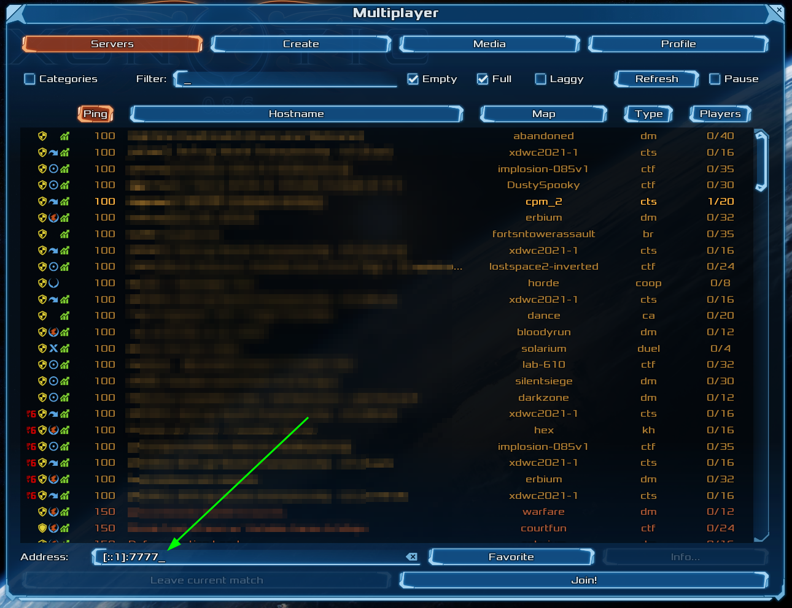

Overview
Quilkin is a UDP proxy, specifically designed for use with multiplayer dedicated game servers.
What is Quilkin?
Quilkin on open source is a non-transparent UDP proxy specifically designed for use with large scale multiplayer dedicated game servers deployments, to ensure security, access control, telemetry data, metrics and more.
It is designed to be used behind game clients as well as in front of dedicated game servers.
Quilkin’s aim is to pull the above functionality out of bespoke, monolithic dedicated game servers and clients, and provide standard, composable modules that can be reused across a wide set of multiplayer games, so that game developers can instead focus on their game specific aspects of building a multiplayer game.
Why use Quilkin?
Some of Quilkin’s advantages:
- Lower development and operational costs for securing, monitoring and making reliable multiplayer game servers and their communications.
- Provide entry-point redundancy for your game clients to connect to - making it much harder to take down your game servers.
- Multiple integration patterns, allowing you to choose the level of integration that makes sense for your architecture.
- Remove non-game specific computation out of your game server’s processing loop - and save that precious CPU for your game simulation!
Major Features
Quilkin incorporates these abilities:
- Non-transparent proxying of UDP data, the internal state of your game architecture is not visible to bad actors.
- Out of the box metrics for UDP packet information.
- Composable tools for access control and security.
- Able to be utilised as a standalone binary, with no client/server changes required or as a Rust library depending on how deep an integration you wish for your system.
- Integration with Game Server hosting platforms such as Agones.
- Can be integrated with C/C++ code bases via FFI.
Quilkin Architecture
Quilkin is broken up into three main components
- Providers are data collection sources to enable quilkin to see its environment.
- Services provide the the core business logic for handling UDP traffic as well meta control-plane functionality.
- Configuration controls what a given instance is able to do, what services it runs, and providers it pulls from.
architecture-beta
group services(cloud)[Services]
group public(cloud)[Public Client API] in services
group private(cloud)[Internal Service API] in services
group providers(cloud)[Providers]
group config(cloud)[Configuration]
service udp(internet)[UDP] in public
service qcmp(internet)[QCMP] in public
junction sp1 in services
junction sp3 in services
service http(internet)[HTTP] in private
junction sp2 in services
junction sp4 in services
service k8s(cloud)[Kubernetes] in providers
service fs(disk)[Filesystem] in providers
service cli(disk)[CLI] in providers
junction p1 in providers
junction p2 in providers
service filters(disk)[Filterchains] in config
service endpoints(disk)[Endpoints] in config
service gameservers(server)[Game Servers] in config
service mmdb(server)[Maxmind DB] in config
junction c1 in config
junction c2 in config
service quilkin(server)[Quilkin]
sp1:T -- R:udp
sp1:L -- R:qcmp
sp1:B -- T:sp3
sp2:T -- B:sp3
sp4:B -- R:http
sp4:T -- B:sp2
sp3:R -- L:quilkin
quilkin:R -- L:p1
p1:T -- L:fs
p1:R -- L:k8s
p1:B -- T:p2
p2:B -- L:cli
c2:L -- R:mmdb
c2:R -- L:gameservers
c1:T -- B:c2
c1:R -- L:endpoints
c1:L -- R:filters
c1:B -- T:quilkin
What Next?
Quilkin provides a variety of different services depending on your use-case.
The primary service is proxy, which runs a reverse UDP
proxy. To see a basic usage of the command-line interface run through the
netcat with Quilkin quickstart.
For more advanced usage, you might also be interested in:
- Checking out the installation guide
- Having a look at the example projects for basic configuration examples.
- Checking out the example deployment architecture for deploying quilkin for your game network.
$ quilkin --help
{{#include ../../target/quilkin.commands}}
Installation
There are variety of automated and manual methods for installing Quilkin onto your system. For cloud deployments Quilkin provides a container image to make it easily to immediately start using it. You can also install Quilkin on your local machine through Cargo.
Distributions
OCI Image
- Source / Method
-
docker pull ghcr.io/embarkstudios/quilkin:<version>-<short_commit> - Notes
- Pre-built Quilkin binary with no preset arguments
Cargo
- Source / Method
-
cargo install quilkin - Notes
- Compiled from source using cargo
GitHub
- Source / Method
- Notes
- Pre-built binaries for manual installation
FAQ
Just how fast is Quilkin? What sort of performance can I expect?
Our current testing shows that on Quilkin shows that it process packets quite fast!
We won’t be publishing performance benchmarks, as performance will always change depending on the underlying hardware, number of filters, configurations and more.
We highly recommend you run your own load tests on your platform and configuration, matching your production workload and configuration as close as possible.
We are always investigating further performance improvements in upcoming releases, both from an optimisation and observability perspective as well.
Can I integrate Quilkin with C++ code?
Quilkin is also released as a library so it can be integrated with an external codebase as necessary.
Using Rust code inside a C or C++ project mostly consists of two parts.
- Creating a C-friendly API in Rust
- Embedding your Rust project into an external build system
See A little Rust with your C for more information.
Over time, we will be expanding documentation on how to integrate with specific engines if running Quilkin as a separate binary is not an option.
I would like to run Quilkin as a client side proxy on a console? Can I do that?
This is an ongoing discussion, and since console development is protected by non-disclosure agreements, we can’t comment on this directly.
That being said, we have an Unreal Engine for games in circumstances where compiling Rust or providing a separate Quilkin binary as an executable is not an option.
Quickstart: Quilkin with netcat
Requirements
- A *nix terminal
- A binary release of Quilkin from the Github releases page or by running
cargo install quilkin - ncat
- netcat
1. Start an udp echo service
So that we have a target for sending UDP packets to, let’s use ncat to create a simple UDP echo process.
To do this run:
ncat -e $(which cat) -k -u -l 8080
This routes all UDP packets that ncat receives to the local cat process, which echoes it back.
2. Start Quilkin
Next let’s configure Quilkin in proxy mode, with a static configuration that points at the UDP echo service we just started.
quilkin proxy --to 127.0.0.1:8080
This configuration will start Quilkin on the default proxy port, and it will redirect all incoming UDP traffic to a single endpoint of 127.0.0.1, port 8080.
You should see an output like the following:
{"timestamp":"2023-01-19T10:16:23.399277Z","level":"INFO","fields":{"message":"Starting Quilkin","version":"0.6
.0-dev","commit":"72176a191ffc3a597e3834ee1d0090b30caf81d4"},"target":"quilkin::cli","filename":"src/cli.rs"}
{"timestamp":"2023-01-19T10:16:23.399771Z","level":"INFO","fields":{"message":"Starting admin endpoint","addres
s":"0.0.0.0:8000"},"target":"quilkin::admin","filename":"src/admin.rs"}
{"timestamp":"2023-01-19T10:16:23.400544Z","level":"INFO","fields":{"message":"Starting","port":7777,"proxy_id"
:"7e9fc464-6ccc-41fe-afc4-6c97089de9b8"},"target":"quilkin::proxy","filename":"src/proxy.rs"}
{"timestamp":"2023-01-19T10:16:23.401192Z","level":"INFO","fields":{"message":"Quilkin is ready"},"target":"qui
3. Send a packet
In (yet 😃) another shell, let’s use netcat to send an udp packet.
Run the following to connect netcat to Quilkin’s receiving port of 7000 via UDP (-u):
nc -u 127.0.0.1 7777
Type the word “test” and hit enter, you should see it echoed back to you like so:
nc -u 127.0.0.1 7777
test
test
Feel free to send even more packets, as many as you would like 👍.
Congratulations! You have successfully routed a UDP packet and back again with Quilkin!
What’s next?
- Run through the Quilkin with Agones quickstart.
- Have a look at some of the examples we have.
Quickstart: Quilkin with Agones and Xonotic (Sidecar)
Requirements
- A terminal with
kubectlinstalled - A local copy of the Xonotic client
- A running Agones Kubernetes cluster
- Installation instructions
- If you aren’t familiar with Agones, we recommend working through their Getting Started guides.
1. Agones Fleet with Quilkin
In this step, we’re going to set up a Xonotic dedicated game server, with Quilkin running as a sidecar, which will give us access to all the metrics that Quilkin provides.
kubectl apply -f https://raw.githubusercontent.com/EmbarkStudios/quilkin/main/examples/agones-xonotic-sidecar/sidecar.yaml
This applies two resources to your cluster:
- A Kubernetes ConfigMap with a basic Quilkin static configuration.
- An Agones Fleet specification with Quilkin running as a sidecar to Xonotic, such that it can process all the UDP traffic and pass it to the Xonotic dedicated game server.
Now you can run kubectl get gameservers until all your Agones GameServers are marked as Ready like so:
$ kubectl get gameservers
NAME STATE ADDRESS PORT NODE AGE
xonotic-sidecar-htc2x-84mzm Ready 34.94.107.201 7533 gke-agones-default-pool-0f7d8adc-7w3c 7m25s
xonotic-sidecar-htc2x-sdp4k Ready 34.94.107.201 7599 gke-agones-default-pool-0f7d8adc-7w3c 7m25s
2. Play Xonotic!
Usually with Agones you would
Allocate a
GameServer, but we’ll skip this step for this example.
Choose one of the listed GameServers from the previous step, and connect to the IP and port of the Xonotic
server via the “Multiplayer > Address” field in the Xonotic client in the format of {IP}:{PORT}.

You should now be playing a game of Xonotic against 4 bots!
3. Check out the metrics
Let’s take a look at some metrics that Quilkin outputs.
Grab the name of the GameServer you connected to before, and replace the ${gameserver} value below, and run the
command. This will forward the admin interface to localhost.
kubectl port-forward ${gameserver} 8000
Then open a browser to http://localhost:8000/metrics to see the Prometheus metrics that Quilkin exports.
5. Cleanup
Run the following to delete the Fleet and the accompanying ConfigMap:
kubectl delete -f https://raw.githubusercontent.com/EmbarkStudios/quilkin/main/examples/agones-xonotic-sidecar/sidecar.yaml
6. Play Xonotic, through Quilkin
Note: compression has been removed.
What we will do in this step, is run Quilkin locally as a client-side proxy to compress the UDP data before it is sent up to our Xonotic servers that are expecting compressed data.
First, grab a copy of the Quilkin configuration client-compress.yaml locally. This has the Compress filter already configured, but we need to fill in the address to connect to.
Rather than editing a file, this could also be sent through the xDS API, but it is easier to demonstrate this functionality through a static configuration.
Instead of connecting Xonotic directly, take the IP and port from one of the Agones hosted GameServer records, and
replace the ${GAMESERVER_IP} and ${GAMESERVER_PORT} values in your copy of client-compress.yaml.
Run this configuration locally as:
quilkin -c ./client-compress.yaml proxy
Now we can connect to the local client proxy on “127.0.0.1:7777” via the “Multiplayer > Address” field in the Xonotic client, and Quilkin will take care of compressing the data for you without having to change the game client!
Congratulations! You are now using Quilkin to manipulate the game client to server connection, without having to edit either!
7. Cleanup
Run the following to delete the Fleet and the accompanying ConfigMap:
kubectl delete -f https://raw.githubusercontent.com/EmbarkStudios/quilkin/main/examples/agones-xonotic-sidecar/sidecar-compress.yaml
What’s Next?
- Have a look at the examples folder for configuration and usage examples.
Quickstart: Quilkin with Agones and Xonotic (xDS)
Requirements
- A terminal with
kubectlinstalled - A local copy of the Xonotic client
- A running Agones Kubernetes cluster
- Installation instructions
- If you aren’t familiar with Agones, we recommend working through their Getting Started guides.
- A local copy of the Quilkin Binary.
1. Overview
In this quickstart, we’ll be setting up an example Xonotic Agones
Fleet, that will only be accessible through Quilkin that is hosted within the same cluster, utilising the
TokenRouter Filter to provide routing and access control to the Allocated GameServer instances.
To do this, we’ll take advantage of the Quilkin Agones xDS Provider to provide an out-of-the-box control plane for integration between Agones and Quilkin’s xDS configuration API with minimal effort.
2. Install Quilkin Agones xDS Provider
To install Quilkin as an Agones integrated xDS control plane, we can create a deployment of Quilkin running with
provider.k8s.agones, with the appropriate permissions.
Run the following:
kubectl apply -f https://raw.githubusercontent.com/EmbarkStudios/quilkin/main/examples/agones-xonotic-xds/xds-control-plane.yaml
This applies several resources to your cluster:
- A ConfigMap with a Capture and TokenRouter Filter set up to route packets to Endpoints, to be the base configuration for all the Quilkin proxies.
- Appropriate RBAC permissions for the
quilkin manage agonesprocess to inspect Agones resources. - A matching Deployment that runs the
quilkin manage processxDS control plane and a Service that the Quilkin proxies can connect to, to get their Filter and Endpoint configuration from.
Now we can run kubectl get pods until we see that the Pod for the Deployment is up and running.
$ kubectl get pods
NAME READY STATUS RESTARTS AGE
quilkin-manage-agones-54b787654-9dbvp 1/1 Running 0 76s
We can now run kubectl get service quilkin-manage-agones and see the
service that is generated in front of the above Deployment for our Quilkin proxies to connect to and receive their
configuration information from.
$ kubectl get service quilkin-manage-agones
NAME TYPE CLUSTER-IP EXTERNAL-IP PORT(S) AGE
quilkin-manage-agones ClusterIP 10.104.2.72 <none> 80/TCP 1m23s
3. Install Quilkin Proxy Pool
To install the Quilkin Proxy pool which connects to the above xDS provider, we can create a Deployment of Quilkin proxy instances that point to the aforementioned Service, like so:
kubectl apply -f https://raw.githubusercontent.com/EmbarkStudios/quilkin/main/examples/agones-xonotic-xds/proxy-pool.yaml
This will set up three instances of Quilkin running as quilkin proxy --management-server http://quilkin-manage-agones:80
all connected to the quilkin-manage-agones service.
Now we can run kubectl get pods until we see that the Pods for the proxy Deployment is up and running.
$ kubectl get pods
NAME READY STATUS RESTARTS AGE
quilkin-manage-agones-54b787654-9dbvp 1/1 Running 0 5m7s
quilkin-proxies-78965c446d-dqvjg 1/1 Running 0 6s
quilkin-proxies-78965c446d-fr6zs 1/1 Running 0 6s
quilkin-proxies-78965c446d-m4rr7 1/1 Running 0 6s
Let’s take this one step further, and check the configuration of the proxies that should have come from the quilkin manage agones instance.
In another terminal, run: kubectl port-forward deployments/quilkin-proxies 8001:8000, to port forward the
admin endpoint locally to port 8001, which we can then query.
Go back to your original terminal and run curl -s http://localhost:8001/config
If you have jq installed, run
curl -s http://localhost:8001/config | jqfor a nicely formatted JSON output.
$ curl -s http://localhost:8001/config | jq
{
"clusters": [
{
"endpoints": [],
"locality": null
}
],
"filters": [
{
"name": "quilkin.filters.capture.v1alpha1.Capture",
"label": null,
"config": {
"metadataKey": "quilkin.dev/capture",
"suffix": {
"size": 3,
"remove": true
}
}
},
{
"name": "quilkin.filters.token_router.v1alpha1.TokenRouter",
"label": null,
"config": null
}
],
"id": "quilkin-proxies-7d9bbbccdf-9vd59",
"version": "v1alpha1"
}
This shows us the current configuration of the proxies coming from the xDS server created via quilkin manage agones. The most interesting part that we see here, is that we have a matching set of
Filters that are found in the ConfigMap in the
xds-control-plane.yaml
we installed earlier.
4. Create the Agones Fleet
Now we will create an Agones Fleet to spin up all our Xonotic game servers.
Thankfully, Agones Fleets require no specific configuration to work with Quilkin proxies, so this yaml is a standard Agones Fleet configuration
kubectl apply -f https://raw.githubusercontent.com/EmbarkStudios/quilkin/main/examples/agones-xonotic-xds/fleet.yaml
Run kubectl get gameservers until all the GameServer records show that they are Ready and able to take players.
$ kubectl get gameservers
NAME STATE ADDRESS PORT NODE AGE
xonotic-d7rfx-55j7q Ready 34.168.170.51 7226 gke-agones-default-534a3f8d-ifpc 34s
xonotic-d7rfx-nx7xr Ready 34.168.170.51 7984 gke-agones-default-534a3f8d-ifpc 34s
xonotic-d7rfx-sn5d6 Ready 34.168.170.51 7036 gke-agones-default-534a3f8d-ifpc 34s
5. Allocate a GameServer
To let the Quilkin xDS provider know what token will route to which GameServer we need to apply the
quilkin.dev/tokens annotation to an allocated GameServer, with the token content as its value.
This token would normally get generated by some kind of player authentication service and passed to the client via the matchmaking service - but for demonstrative purposes, we’ve hardcoded it into the example
GameServerAllocation.
Since you can add annotations to GameServers at
allocation time, we can both allocate a GameServer
and apply the annotation at the same time!
kubectl create -f https://raw.githubusercontent.com/EmbarkStudios/quilkin/main/examples/agones-xonotic-xds/gameserverallocation.yaml
If we check our GameServers now, we should see that one of them has moved to the Allocated state, marking it as
having players playing on it, and therefore it is protected by Agones until the game session ends.
$ kubectl get gs
NAME STATE ADDRESS PORT NODE AGE
xonotic-d7rfx-55j7q Allocated 34.168.170.51 7226 gke-agones-default-534a3f8d-ifpc 23m
xonotic-d7rfx-nx7xr Ready 34.168.170.51 7984 gke-agones-default-534a3f8d-ifpc 23m
xonotic-d7rfx-sn5d6 Ready 34.168.170.51 7036 gke-agones-default-534a3f8d-ifpc 23m
Don’t do this more than once, as then multiple allocated
GameServerswill have the same routing token!
If we kubectl describe gameserver <allocated-gameserver> and have a look at the annotations section, we
should see something similar to this:
$ kubectl describe gameserver xonotic-d7rfx-55j7q
Name: xonotic-d7rfx-55j7q
Namespace: default
Labels: agones.dev/fleet=xonotic
agones.dev/gameserverset=xonotic-h5cfn
Annotations: agones.dev/last-allocated: 2022-12-19T22:59:22.099818298Z
agones.dev/ready-container-id: containerd://7b3d9e9dbda6f2e0381df7669f6117bf3e54171469cfacbce2670605a61ce4b8
agones.dev/sdk-version: 1.40.0
quilkin.dev/tokens: NDU2
API Version: agones.dev/v1
Kind: GameServer
...
Where we can see that there is now an annotation of quilkin.dev/tokens with the base64 encoded version of 456 as
our authentication and routing token (“NDU2”).
You should use something more cryptographically random than
456in your application.
Let’s run curl -s http://localhost:8001/config again, so we can see what has changed!
❯ curl -s http://localhost:8001/config | jq
{
"clusters": [
{
"endpoints": [
{
"address": "34.168.170.51:7226",
"metadata": {
"quilkin.dev": {
"tokens": [
"NDU2"
]
},
"name": "xonotic-8ns7b-2lk5d"
}
}
],
"locality": null
}
],
"filters": [
{
"name": "quilkin.filters.capture.v1alpha1.Capture",
"label": null,
"config": {
"metadataKey": "quilkin.dev/capture",
"suffix": {
"size": 3,
"remove": true
}
}
},
{
"name": "quilkin.filters.token_router.v1alpha1.TokenRouter",
"label": null,
"config": null
}
],
"id": "quilkin-proxies-7d9bbbccdf-9vd59",
"version": "v1alpha1"
}
Looking under clusters > endpoints we can see an address and token that matches up with the
GameServer record we created above!
The xDS process saw that allocated GameServer, turned it into a Quilkin Endpoint and applied the set the routing
token appropriately – without you having to write a line of xDS compliant code!
Connecting Client Side
Instead of connecting to Xonotic or an Agones GameServer directly, we’ll want to grab the IP and exposed port of
the Service that fronts all our Quilkin proxies and connect to that instead – but we’ll have to append our
routing token 456 from before, to ensure our traffic gets routed to the correct Xonotic GameServer address.
Run kubectl get service quilkin-proxies to get the EXTERNAL-IP of the Service you created.
$ kubectl get service quilkin-proxies
NAME TYPE CLUSTER-IP EXTERNAL-IP PORT(S) AGE
quilkin-proxies LoadBalancer 10.109.0.12 35.246.94.14 7777:30174/UDP 3h22m
We have a Quilkin config yaml
file all ready for you, that is configured to append the routing token 456 to each
packet that passes through it, via the power of a
Concatenate Filter.
Download client-token.yaml locally, so you can edit it:
curl https://raw.githubusercontent.com/EmbarkStudios/quilkin/main/examples/agones-xonotic-xds/client-token.yaml --output client-token.yaml
We then take the EXTERNAL-IP and port from the quilkin-proxies service, and replace the${LOADBALANCER_IP}
with it in client-token.yaml.
Run this edited configuration locally with your quilkin binary as quilkin -c ./client-token.yaml proxy:
$ ./quilkin --config ./client-token.yaml proxy
2023-10-04T20:09:07.320780Z INFO quilkin::cli: src/cli.rs: Starting Quilkin version="0.7.0-dev" commit="d42db7e14c2e0e758e9a6eb655ccf4184941066c"
2023-10-04T20:09:07.321711Z INFO quilkin::admin: src/admin.rs: Starting admin endpoint address=[::]:8000
2023-10-04T20:09:07.322089Z INFO quilkin::cli::proxy: src/cli/proxy.rs: Starting port=7777 proxy_id="markmandel45"
2023-10-04T20:09:07.322576Z INFO quilkin::cli::proxy: src/cli/proxy.rs: Quilkin is ready
2023-10-04T20:09:07.322692Z INFO qcmp_task{v4_addr=0.0.0.0:7600 v6_addr=[::]:7600}: quilkin::protocol: src/protocol.rs: awaiting qcmp packets v4_addr=0.0.0.0:7600 v6_addr=[::]:7600
Now connect to the local client proxy on “[::1]:7777” via the “Multiplayer > Address” field in the Xonotic client, and Quilkin will take care of appending the routing token to all your UDP packets, which the Quilkin proxies will route to the Allocated GameServer, and you can play a gamee!
…And you didn’t have to change the client or the dedicated game server 🤸
What’s Next?
- Check out the variety of Filters that are possible with Quilkin.
- Read into the xDS Management API.
Quickstart: Quilkin with Agones and Xonotic (Relay)
Requirements
- A terminal with
kubectlinstalled - A local copy of the Xonotic client
- A running Agones Kubernetes cluster
- Installation instructions
- If you aren’t familiar with Agones, we recommend working through their Getting Started guides.
- A local copy of the Quilkin Binary.
1. Overview
In this quickstart, we’ll be setting up an example multi-cluster
Xonotic Agones Fleet, that will
only be accessible through Quilkin, via utilising the TokenRouter Filter to
provide routing and access control to the Allocated GameServer instances.
To do this, we’ll take advantage of the Quilkin Relay to provide an out-of-the-box multi-cluster xDS control plane, and the Agones Agent to send information from the cluster(s) to the relay, which can be used as a management server for each of the Quilkin Proxy instances.
While the application of
quilkin relayis to ultimately provide a solution where multiple clusters feed configuration information into a single relay endpoint via aquilkin agent, in this example we’ll use a single cluster for demonstrative purposes.
2. Install Quilkin Relay and Agones Agent
To install Quilkin as an Agones integrated relay control plane, we can create a deployment of Quilkin running as
quilkin relay with a corresponding Agones agent, quilkin agent agones, with the appropriate permissions.
Run the following:
kubectl apply -f https://raw.githubusercontent.com/EmbarkStudios/quilkin/main/examples/agones-xonotic-relay/relay-control-plane.yaml
This applies several resources to your cluster:
- A ConfigMap with a Capture and TokenRouter Filter set up to route packets to Endpoints, to be the base configuration for all the Quilkin proxies.
- Appropriate RBAC permissions for the
quilkin agent agonesprocess to inspect Agones resources. - A Deployment that runs the
quilkin relayprocess, a matching Deployment for thequilkin agentprocess and a Service that the Quilkin agents can send configuration information to, and the Proxies can connect to, to get their Filter and Endpoint configuration from.
Now we can run kubectl get pods until we see that the Pod for the Deployment is up and running.
$ kubectl get pods
NAME READY STATUS RESTARTS AGE
quilkin-agones-agent-9dd6699bd-qh7cq 1/1 Running 0 6s
quilkin-relay-agones-55fbd69f5d-cdh9k 1/1 Running 0 6s
We can now run kubectl get service quilkin-relay-agones and see the
service that is generated in front of the above Quilkin Relay Deployment for our Quilkin Proxies to connect to and
receive their configuration information from.
$ kubectl get service quilkin-relay-agones
NAME TYPE CLUSTER-IP EXTERNAL-IP PORT(S) AGE
quilkin-relay-agones ClusterIP 10.103.243.246 <none> 7800/TCP,7900/TCP 57s
3. Install Quilkin Proxy Pool
To install the Quilkin Proxy pool which connects to the above Relay xDS provider, we can create a Deployment of Quilkin proxy instances that point to the aforementioned Service, like so:
kubectl apply -f https://raw.githubusercontent.com/EmbarkStudios/quilkin/main/examples/agones-xonotic-relay/proxy-pool.yaml
This will set up three instances of Quilkin running as quilkin proxy --management-server http://quilkin-relay-agones:7900 all of which are connected to the quilkin-relay-agones service.
Now we can run kubectl get pods until we see that the Pods for the proxy Deployment is up and running.
$ kubectl get pods
NAME READY STATUS RESTARTS AGE
quilkin-agones-agent-9dd6699bd-5brzf 1/1 Running 0 18s
quilkin-proxies-7d9bbbccdf-5mz4l 1/1 Running 0 7s
quilkin-proxies-7d9bbbccdf-9vd59 1/1 Running 0 7s
quilkin-proxies-7d9bbbccdf-vwn2f 1/1 Running 0 7s
quilkin-relay-agones-55fbd69f5d-k2n7b 1/1 Running 0 18s
Let’s take this one step further, and check the configuration of the proxies that should have come from the quilkin agent agones instance and passed through the quilkin relay instance into each of the proxies.
In another terminal, run: kubectl port-forward deployments/quilkin-proxies 8001:8000, to port forward the
admin endpoint locally to port 8001, which we can then query.
Go back to your original terminal and run curl -s http://localhost:8001/config
If you have jq installed, run
curl -s http://localhost:8001/config | jqfor a nicely formatted JSON output.
$ curl -s http://localhost:8001/config | jq
{
"clusters": [
{
"endpoints": [],
"locality": null
}
],
"filters": [
{
"name": "quilkin.filters.capture.v1alpha1.Capture",
"label": null,
"config": {
"metadataKey": "quilkin.dev/capture",
"suffix": {
"size": 3,
"remove": true
}
}
},
{
"name": "quilkin.filters.token_router.v1alpha1.TokenRouter",
"label": null,
"config": null
}
],
"id": "quilkin-proxies-7d9bbbccdf-9vd59",
"version": "v1alpha1"
}
This shows us the current configuration of the proxies coming from the xDS server created via quilkin agent agones. The most interesting part that we see here, is that we have a matching set of
Filters that are found in the ConfigMap in the
relay-control-plane.yaml
we installed earlier.
4. Create the Agones Fleet
Now we will create an Agones Fleet to spin up all our Xonotic game servers.
Thankfully, Agones Fleets require no specific configuration to work with Quilkin proxies, so this yaml is a standard Agones Fleet configuration
kubectl apply -f https://raw.githubusercontent.com/EmbarkStudios/quilkin/main/examples/agones-xonotic-relay/fleet.yaml
Run kubectl get gameservers until all the GameServer records show that they are Ready and able to take players.
$ kubectl get gs
NAME STATE ADDRESS PORT NODE AGE
xonotic-8ns7b-2lk5d Ready 39.168.219.72 7015 gke-agones-default-ad8cd7e5-3b12 1m
xonotic-8ns7b-hrc8j Ready 39.168.219.72 7298 gke-agones-default-ad8cd7e5-3b12 1m
xonotic-8ns7b-mldg6 Ready 39.168.219.72 7558 gke-agones-default-ad8cd7e5-3b12 1m
5. Allocate a GameServer
To let the Quilkin Agones Agent know what token will route to which GameServer we need to apply the
quilkin.dev/tokens annotation to an allocated GameServer, with the token content as its value.
This token would normally get generated by some kind of player authentication service and passed to the client via the matchmaking service - but for demonstrative purposes, we’ve hardcoded it into the example
GameServerAllocation.
Since you can add annotations to GameServers at
allocation time, we can both allocate a GameServer
and apply the annotation at the same time!
kubectl create -f https://raw.githubusercontent.com/EmbarkStudios/quilkin/main/examples/agones-xonotic-relay/gameserverallocation.yaml
If we check our GameServers now, we should see that one of them has moved to the Allocated state, marking it as
having players playing on it, and therefore it is protected by Agones until the game session ends.
$ kubectl get gs
NAME STATE ADDRESS PORT NODE AGE
xonotic-8ns7b-2lk5d Allocated 39.168.219.72 7015 gke-agones-default-ad8cd7e5-3b12 17m
xonotic-8ns7b-hrc8j Ready 39.168.219.72 7298 gke-agones-default-ad8cd7e5-3b12 17m
xonotic-8ns7b-mldg6 Ready 39.168.219.72 7558 gke-agones-default-ad8cd7e5-3b12 17m
Don’t do this more than once, as then multiple allocated
GameServerswill have the same routing token!
If we kubectl describe gameserver <allocated-gameserver> and have a look at the annotations section, we
should see something similar to this:
❯ kubectl describe gs xonotic-8ns7b-2lk5d
Name: xonotic-8ns7b-2lk5d
Namespace: default
Labels: agones.dev/fleet=xonotic
agones.dev/gameserverset=xonotic-8ns7b
Annotations: agones.dev/last-allocated: 2023-10-04T19:47:04.047026419Z
agones.dev/ready-container-id: containerd://b39d30965becdbc40336fd9aa642fe776421553615f642dd599e1b0d88c505b6
agones.dev/sdk-version: 1.40.0
quilkin.dev/tokens: NDU2
API Version: agones.dev/v1
Kind: GameServer
...
Where we can see that there is now an annotation of quilkin.dev/tokens with the base64 encoded version of 456 as
our authentication and routing token (“NDU2”).
You should use something more cryptographically random than
456in your application.
Let’s run curl -s http://localhost:8001/config again, so we can see what has changed!
❯ curl -s http://localhost:8001/config | jq
{
"clusters": [
{
"endpoints": [
{
"address": "39.168.219.72:7015",
"metadata": {
"quilkin.dev": {
"tokens": [
"NDU2"
]
},
"name": "xonotic-8ns7b-2lk5d"
}
}
],
"locality": null
}
],
"filters": [
{
"name": "quilkin.filters.capture.v1alpha1.Capture",
"label": null,
"config": {
"metadataKey": "quilkin.dev/capture",
"suffix": {
"size": 3,
"remove": true
}
}
},
{
"name": "quilkin.filters.token_router.v1alpha1.TokenRouter",
"label": null,
"config": null
}
],
"id": "quilkin-proxies-7d9bbbccdf-9vd59",
"version": "v1alpha1"
}
Looking under clusters > endpoints we can see an address and token that matches up with the
GameServer record we created above!
The Agones agent process saw that allocated GameServer, turned it into a Quilkin Endpoint and applied the set
routing token appropriately – without you having to write a line of xDS compliant code!
Connecting Client Side
Instead of connecting to Xonotic or an Agones GameServer directly, we’ll want to grab the IP and exposed port of
the Service that fronts all our Quilkin proxies and connect to that instead – but we’ll have to append our
routing token 456 from before, to ensure our traffic gets routed to the correct Xonotic GameServer address.
Run kubectl get service quilkin-proxies to get the EXTERNAL-IP of the Service you created.
$ kubectl get service quilkin-proxies
NAME TYPE CLUSTER-IP EXTERNAL-IP PORT(S) AGE
quilkin-proxies LoadBalancer 10.109.0.12 35.246.94.14 7777:30174/UDP 3h22m
We have a Quilkin config yaml
file all ready for you, that is configured to append the routing token 456 to each
packet that passes through it, via the power of a
Concatenate Filter.
Download client-token.yaml locally, so you can edit it:
curl https://raw.githubusercontent.com/EmbarkStudios/quilkin/main/examples/agones-xonotic-relay/client-token.yaml --output client-token.yaml
We then take the EXTERNAL-IP and port from the quilkin-proxies service, and replace the${LOADBALANCER_IP}
with it in client-token.yaml.
Run this edited configuration locally with your quilkin binary as quilkin -c ./client-token.yaml proxy:
$ ./quilkin --config ./client-token.yaml proxy
2023-10-04T20:09:07.320780Z INFO quilkin::cli: src/cli.rs: Starting Quilkin version="0.7.0-dev" commit="d42db7e14c2e0e758e9a6eb655ccf4184941066c"
2023-10-04T20:09:07.321711Z INFO quilkin::admin: src/admin.rs: Starting admin endpoint address=[::]:8000
2023-10-04T20:09:07.322089Z INFO quilkin::cli::proxy: src/cli/proxy.rs: Starting port=7777 proxy_id="markmandel45"
2023-10-04T20:09:07.322576Z INFO quilkin::cli::proxy: src/cli/proxy.rs: Quilkin is ready
2023-10-04T20:09:07.322692Z INFO qcmp_task{v4_addr=0.0.0.0:7600 v6_addr=[::]:7600}: quilkin::protocol: src/protocol.rs: awaiting qcmp packets v4_addr=0.0.0.0:7600 v6_addr=[::]:7600
Now connect to the local client proxy on “[::1]:7777” via the “Multiplayer > Address” field in the Xonotic client, and Quilkin will take care of appending the routing token to all your UDP packets, which the Quilkin proxies will route to the Allocated GameServer, and you can play a gamee!
…And you didn’t have to change the client or the dedicated game server 🤸
What’s Next?
- Check out the variety of Filters that are possible with Quilkin.
- Read into the xDS Management API.
Quilkin Control Message Protocol (QCMP)
| services | ports | Protocol |
|---|---|---|
| QCMP | 7600 | UDP AND TCP (IPv4 OR IPv6) |
In addition to the TCP based administration API, Quilkin provides a meta API over UDP and TCP. The purpose of this API is to provide meta operations that can be used by untrusted clients. Currently the API is focuses on providing pings for latency measurement but that may change overtime as new features are added.
Ping
The main functionality currently in QCMP is pinging, measuring the latency from
one service to another over UDP. You can also measure the distance locally using
the quilkin qcmp ping command.
quilkin qcmp ping 127.0.0.1:7600
Protocol Data Unit
The following is a Kaitai Struct configuration of the protocol data unit accepted by Quilkin proxies.
meta:
id: quilkin_packet
endian: be
seq:
- id: magic_header
contents: "QLKN"
- id: protocol_version
type: u1
- id: packet_type
type: u1
- id: packet_length
type: u2
- id: packet
size: packet_length
type:
switch-on: packet_type
cases:
0: ping_packet
1: ping_reply_packet
types:
ping_packet:
doc: |
Sent by a client to a proxy containing the time when the client sent the
packet along with a unique nonce. The timestamp should be a UTC unix
timestamp in **nanoseconds**.
seq:
- id: nonce
type: u1
- id: client_sent_timestamp
type: u8
ping_reply_packet:
doc: |
A reply from a proxy containing the ping's nonce, the client sent time,
the server's receive time, and the server's sent time. The timestamps
should be UTC unix timestamps in **nanoseconds**.
seq:
- id: nonce
type: u1
- id: client_sent_timestamp
type: u8
- id: server_receive_timestamp
type: u8
- id: server_sent_timestamp
type: u8
Datacenter Latency
In addition to being able to ping Quilkin to get the latency between the client and proxy. In order to allow clients to send information to services like a matchmaker about which datacentre they are closest to, Quilkin also includes the ability to get a proxy’s latency to each of its connected datacentres.
Note: This requires a multi-cluster relay setup, as when you set up proxies in the same cluster as gameservers, this measurement is redundant.
All that is required to set this up is to provide an ICAO code to the agent in
the gameserver cluster. (E.g. through the environment variable ICAO_CODE).
No further setup is required. You can use duplicate ICAO codes, Quilkin will
choose the best result amongst the duplicates to return. Quilkin assumes that
multiple of the same ICAO code refer to the same phyiscal datacentre, so latency
between them should negible.
Why ICAO? ICAO is an international standard for airport codes, airport codes are an easy human readable code that makes it easy to use geo-visualisations in tools like Grafana, and easily allows grouping. IATA codes only cover major airports, ICAO codes cover practically every airport making them easy to more accurately represent the location of any datacentre.
API And Schema
Currently the datacentre latency can be retrieved by sending a GET / HTTP
request to the QCMP port.
The returned data is a JSON object with each key being the ICAO code for the datacentre, and the value being the latency in nanoseconds.
Metrics
-
quilkin_phoenix_requestsThe amount of phoenix (latency) requests
-
quilkin_phoenix_task_closedWhether the phoenix latency measurement task has shutdown
-
quilkin_phoenix_server_errorsThe amount of errors attempting to spawn the phoenix HTTP server
-
quilkin_service_qcmp_activeWhether the QCMP service is currently running, either 1 for running or 0 for not.
-
quilkin_service_qcmp_bytes_total{kind, asn, ip_prefix}Total number of bytes processed through QCMP.
kindis eithervalid,invalid, orunsupported. -
quilkin_service_qcmp_errors_total{asn, ip_prefix}Total number of errors QCMP has encountered.
-
quilkin_service_qcmp_packets_total{kind, asn, ip_prefix}Total number of packets processed through QCMP.
kindis eithervalid,invalid, orunsupported. -
quilkin_service_qcmp_ingress_latency_seconds{asn, ip_prefix}The time from when the client created the packet, to when QCMP received it.
UDP
The UDP service is the main protocol for proxying game traffic from the players to your gameservers.
Endpoints
An Endpoint represents an address that Quilkin forwards packets to that it has received from the source port.
It is represented by an IP address and port. An Endpoint can optionally be associated with an arbitrary set of metadata as well.
Proxy Filters
Filters are the way for a Quilkin proxy to intercept UDP packet traffic from the source and Endpoints in either direction, and be able to inspect, manipulate, and route the packets as desired.
See Filters for a deeper dive into Filters, as well as the list of build in Filters that come with Quilkin.
Endpoint Metadata
Endpoint metadata is an arbitrary set of key value pairs that are associated with an Endpoint.
These are visible to Filters when processing packets and can be used to provide more context about endpoints (e.g whether or not to route a packet to an endpoint). Keys must be of type string otherwise the configuration is rejected.
Metadata associated with an endpoint contain arbitrary key value pairs which Filters can consult when processing packets (e.g they can contain information that determine whether or not to route a particular packet to an endpoint).
Specialist Endpoint Metadata
Access tokens that can be associated with an endpoint are simply a special piece of metadata well known to Quilkin and utilised by the built-in TokenRouter filter to route packets.
Such well known values are placed within an object in the endpoint metadata, under the special key quilkin.dev.
Currently, only the tokens key is in use.
As an example, the following shows the configuration for an endpoint with its metadata:
clusters:
- endpoints:
- address: 127.0.0.1:26000
metadata:
canary: false
quilkin.dev: # This object is extracted by Quilkin and is usually reserved for built-in features
tokens:
- MXg3aWp5Ng== # base64 for 1x7ijy6
- OGdqM3YyaQ== # base64 for 8gj3v2i
An endpoint’s metadata can be specified alongside the endpoint in static configuration or using the xDS endpoint metadata field when using dynamic configuration via xDS.
Session
A session represents ongoing communication flow between a client on a [Local Port] and an Endpoint.
Quilkin uses the “Session” concept to track traffic flowing through the proxy between any client-server pair. A
Session serves the same purpose, and can be thought of as a lightweight version of a TCP session in that, while a
TCP session requires a protocol to establish and teardown:
- A Quilkin session is automatically created upon receiving the first packet from a client via the [Local Port] to be sent to an upstream Endpoint.
- The session is automatically deleted after a period of inactivity (where no packet was sent between either party) - currently 60 seconds.
A session is identified by the 4-tuple (client IP, client Port, server IP, server Port) where the client is the
downstream endpoint which initiated the communication with Quilkin and the server is one of the upstream Endpoints
that Quilkin proxies traffic to.
Sessions are established after the filter chain completes. The destination Endpoint of a packet is determined by the filter chain, so a Session can only be created after filter chain completion. For example, if the filter chain drops all packets, then no session will ever be created.
Diagram
architecture-beta
group player(cloud)[Player]
service game(cloud)[Game] in player
game{group}:B --> T:ioj{group}
group udpstack(cloud)[Quilkin Stack]
group services(server)[Service Layer] in udpstack
service providers(cloud)[Providers] in udpstack
service config(disk)[Configuration] in udpstack
providers:L --> R:config
config:T --> B:fc{group}
group bizlayer(cloud)[Packet Processing] in services
service fc(server)[Filter Chain] in bizlayer
service prefilters(server)[preprocessing] in bizlayer
service postfilters(server)[postprocessing] in bizlayer
prefilters:R --> L:fc
fc:R --> L:postfilters
group iolayer(cloud)[UDP layer] in services
service xdp(server)[XDP] in iolayer
service iouring(server)[io uring] in iolayer
junction ioj in iolayer
xdp:R -- L:ioj
iouring:L -- R:ioj
ioj:B --> T:fc{group}
group gs(cloud)[Game Servers]
service gameserver(cloud)[Game Server] in gs
postfilters{group}:R --> L:gameserver
Agones Provider
The Agones Provider is built to simplify Quilkin integration with Agones game server hosting on top of Kubernetes.
This provider watches for changes in Agones
GameServer resources in a cluster, and
utilises that information to provide Endpoint information to connected Quilkin proxies.
Currently, the Agones provider can only discover resources within the cluster it is running in.
Endpoint Configuration
This provider watches the Kubernetes clusters for Allocated
Agones GameServers
and exposes their IP address and Port as Endpoints to any connected Quilkin proxies.
Since an Agones GameServer can have multiple ports exposed, if multiple ports are in use, the server will pick the first port in the port list.
By default the Agones xDS provider will look in the default namespace for any GameServer resources, but it can be
configured via the --gameservers-namespace argument.
Access Tokens
The set of access tokens for the associated Endpoint can be
set by adding a comma separated standard base64 encoded strings. This must be added under an annotation
quilkin.dev/tokens in the
GameServer’s metadata.
For example:
annotations:
# Sets two tokens for the corresponding endpoint with values 1x7ijy6 and 8gj3v2i respectively.
quilkin.dev/tokens: MXg3aWp5Ng==,OGdqM3YyaQ==
Filter Configuration
The Agones provider watches for a singular ConfigMap
that has the label of quilkin.dev/configmap: "true", and any changes that happen to it, and use its contents to
send Filter configuration to any connected Quilkin proxies.
The ConfigMap contents should be a valid Quilkin file configuration, but with no
Endpoint data.
For example:
apiVersion: v1
kind: ConfigMap
metadata:
name: quilkin-xds-filter-config
labels:
quilkin.dev/configmap: "true"
data:
quilkin.yaml: |
version: v1alpha1
filters:
- name: quilkin.filters.capture.v1alpha1.Capture
config:
suffix:
size: 3
remove: true
- name: quilkin.filters.token_router.v1alpha1.TokenRouter
By default the Agones xDS provider will look in the default namespace for this ConfigMap, but it can be
configured via the --config-namespace argument.
Usage
As an example, the following runs quilkin against a cluster (using default
kubeconfig authentication) in the default namespace.
quilkin --provider.k8s.agones --provider.k8s.agones.namespace=default
For a full referenmce of deploying this provider in a Kubernetes cluster, with appropriate Deployments, Services, and RBAC Rules, there is an Agones, xDS and Xonotic example.
Filesystem Provider
The filesystem provider watches a configuration file on disk and sends updates to proxies whenever that file changes.
For example:
quilkin --provider.fs.path quilkin.yaml
You can find the configuration file schema in Configuration File.
Example:
#![allow(unused)]
fn main() {
let yaml = "
version: v1alpha1
filters:
- name: quilkin.filters.debug.v1alpha1.Debug
config:
id: hello
clusters:
- endpoints:
- address: 123.0.0.1:29
metadata:
'quilkin.dev':
tokens:
- 'MXg3aWp5Ng=='
";
let config = quilkin::config::Config::from_reader(yaml.as_bytes()).unwrap();
assert_eq!(config.filters.load().len(), 1);
}Packet Filters
In most cases, we would like Quilkin to do some preprocessing of received packets before sending them off to their destination. Because this stage is entirely specific to the use case at hand and differs between Quilkin deployments, we must have a say over what tweaks to perform - this is where filters come in.
Filters and Filter chain
A filter represents a step in the tweaking/decision-making process of how we would like to process our packets. For example, at some step, we might choose to append some metadata to every packet we receive before forwarding it while at a later step, choose not to forward packets that don’t meet some criteria.
Quilkin lets us specify any number of filters and connect them in a sequence to form a packet processing pipeline similar to a Unix pipeline - we call this pipeline a Filter chain. The combination of filters and filter chain allows us to add new functionality to fit every scenario without changing Quilkin’s core.
As an example, say we would like to perform the following steps in our processing pipeline to the packets we receive.
- Append a predetermined byte to the packet.
- Do not forward (drop) the packet if its length is over 512 bytes.
We would create a filter corresponding to each step either by leveraging any existing filters that do what we want or and connect them to form the following filter chain:
append | drop
When Quilkin consults our filter chain, it feeds the received packet into append and forwards the packet it receives (if any) from drop - i.e the output of append becomes the input into drop and so on in that order.
There are a few things we note here:
-
Although we have in this example, a filter called
drop, every filter in the filter chain has the same ability to drop or update a packet - if any filter drops a packet then no more work needs to be done regarding that packet so the next filter in the pipeline never has any knowledge that the dropped packet ever existed. -
The filter chain is consulted for every received packet, and its filters are traversed in reverse order for packets travelling in the opposite direction. A packet received downstream will be fed into
appendand the result fromdropis forwarded upstream - a packet received upstream will be fed intodropand the result fromappendis forwarded downstream. -
Exactly one filter chain is specified and used to process all packets that flow through Quilkin.
Configuration Examples
// Wrap this example within an async main function since the
// local_rate_limit filter spawns a task on initialization
#[tokio::main]
async fn main() {
let yaml = "
version: v1alpha1
filters:
- name: quilkin.filters.debug.v1alpha1.Debug
config:
id: debug-1
- name: quilkin.filters.local_rate_limit.v1alpha1.LocalRateLimit
config:
max_packets: 10
period: 1
clusters:
- endpoints:
- address: 127.0.0.1:7001
";
let config = quilkin::config::Config::from_reader(yaml.as_bytes()).unwrap();
assert_eq!(config.filters.load().len(), 2);
}We specify our filter chain in the .filters section of the proxy’s configuration which has takes a sequence of FilterConfig objects. Each object describes all information necessary to create a single filter.
The above example creates a filter chain comprising a Debug filter followed by a LocalRateLimit filter - the effect is that every packet will be logged and the proxy will not forward more than 10 packets per second.
The sequence determines the filter chain order so its ordering matters - the chain starts with the filter corresponding the first filter config and ends with the filter corresponding the last filter config in the sequence.
Filter Dynamic Metadata
A filter within the filter chain can share data within another filter further along in the filter chain by propagating the desired data alongside the packet being processed. This enables sharing dynamic information at runtime, e.g information about the current packet that might be useful to other filters that process that packet.
At packet processing time each packet is associated with filter dynamic metadata (a set of key-value pairs). Each key is a unique string while its value is an associated quilkin::metadata::Value.
When a filter processes a packet, it can choose to consult the associated dynamic metadata for more information or itself add/update or remove key-values from the set.
As an example, the built-in [CaptureBytes] filter is one such filter that populates a packet’s filter metadata. [CaptureBytes] extracts information (a configurable byte sequence) from each packet and appends it to the packet’s dynamic metadata for other filters to leverage. On the other hand, the built-in TokenRouter filter selects what endpoint to route a packet by consulting the packet’s dynamic metadata for a routing token. Consequently, we can build a filter chain with a [CaptureBytes] filter preceeding a TokenRouter filter, both configured to write and read the same key in the dynamic metadata entry. The effect would be that packets are routed to upstream endpoints based on token information extracted from their contents.
Well Known Dynamic Metadata
The following metadata are currently used by Quilkin core and built-in filters.
| Name | Type | Description |
|---|---|---|
quilkin.dev/captured | Bytes | The default key under which the Capture filter puts the byte slices it extracts from each packet. |
Built-in filters
Quilkin includes several filters out of the box.
| Filter | Description |
|---|---|
| Capture | Capture specific bytes from a packet and store them in filter dynamic metadata. |
| Concatenate | Add authentication tokens to packets. |
| Debug | Logs every packet. |
| Drop | Drop all packets |
| Firewall | Allowing/blocking traffic by IP and port. |
| LoadBalancer | Distributes downstream packets among upstream endpoints. |
| LocalRateLimit | Limit the frequency of packets. |
| Match | Change Filter behaviour based on dynamic metadata |
| Pass | Allow all packets through |
| Timestamp | Accepts a UNIX timestamp from metadata and observes the duration between that timestamp and now. |
| TokenRouter | Send packets to endpoints based on metadata. |
FilterConfig
Represents configuration for a filter instance.
properties:
name:
type: string
description: |
Identifies the type of filter to be created.
This value is unique for every filter type - please consult the documentation for the particular filter for this value.
config:
type: object
description: |
The configuration value to be passed onto the created filter.
This is passed as an object value since it is specific to the filter's type and is validated by the filter
implementation. Please consult the documentation for the particular filter for its schema.
required: [ 'name' ]
Capture
The Capture filter’s job is to find a series of bytes within a packet, and capture it into
Filter Dynamic Metadata, so that it can be utilised by filters further
down the chain.
This is often used as a way of retrieving authentication tokens from a packet, and used in combination with Concatenate and TokenRouter filter to provide common packet routing utilities.
Capture strategies
There are multiple strategies for capturing bytes from the packet.
Suffix
Captures bytes from the end of the packet.
Prefix
Captures bytes from the start of the packet.
Regex
Captures bytes using a regular expression. Unlike other capture strategies, the regular expression can return one or many values if there are multiple matches.
Filter name
quilkin.filters.capture.v1alpha1.Capture
Configuration Examples
#![allow(unused)]
fn main() {
let yaml = "
version: v1alpha1
filters:
- name: quilkin.filters.capture.v1alpha1.Capture
config:
metadataKey: myapp.com/myownkey
prefix:
size: 3
remove: false
clusters:
- endpoints:
- address: 127.0.0.1:7001
";
let config = quilkin::config::Config::from_reader(yaml.as_bytes()).unwrap();
assert_eq!(config.filters.load().len(), 1);
}Configuration Options (Rust Doc)
{{#include ../../../target/quilkin.filters.capture.v1alpha1.yaml}}
Concatenate
The Concatenate filter’s job is to add a byte packet to either the beginning or end of each UDP packet that passes
through. This is commonly used to provide an auth token to each packet, so they can be routed appropriately.
Filter name
quilkin.filters.concatenate.v1alpha1.Concatenate
Configuration Examples
#![allow(unused)]
fn main() {
let yaml = "
version: v1alpha1
filters:
- name: quilkin.filters.concatenate.v1alpha1.Concatenate
config:
on_read: APPEND
on_write: DO_NOTHING
bytes: MXg3aWp5Ng==
clusters:
- endpoints:
- address: 127.0.0.1:7001
";
let config = quilkin::config::Config::from_reader(yaml.as_bytes()).unwrap();
assert_eq!(config.filters.load().len(), 1);
}Configuration Options (Rust Doc)
{{#include ../../../target/quilkin.filters.concatenate.v1alpha1.yaml}}
Debug
The Debug filter logs all incoming and outgoing packets to standard output.
This filter is useful in debugging deployments where the packets strictly contain valid UTF-8 encoded strings. A generic error message is instead logged if conversion from bytes to UTF-8 fails.
Filter name
quilkin.filters.debug_filter.v1alpha1.Debug
Configuration Examples
#![allow(unused)]
fn main() {
let yaml = "
version: v1alpha1
filters:
- name: quilkin.filters.debug.v1alpha1.Debug
config:
id: debug-1
clusters:
- endpoints:
- address: 127.0.0.1:7001
";
let config = quilkin::config::Config::from_reader(yaml.as_bytes()).unwrap();
assert_eq!(config.filters.load().len(), 1);
}Configuration Options (Rust Doc)
{{#include ../../../target/quilkin.filters.debug.v1alpha1.yaml}}
Drop
The Drop filter always drops any packet passed through it. This is useful in
combination with conditional flow filters like Matches
Filter name
quilkin.filters.drop.v1alpha1.Drop
Configuration Examples
#![allow(unused)]
fn main() {
let yaml = "
version: v1alpha1
clusters:
- endpoints:
- address: 127.0.0.1:26000
- address: 127.0.0.1:26001
filters:
- name: quilkin.filters.capture.v1alpha1.Capture
config:
metadataKey: myapp.com/token
prefix:
size: 3
remove: false
- name: quilkin.filters.match.v1alpha1.Match
config:
on_read:
metadataKey: myapp.com/token
branches:
- value: abc
name: quilkin.filters.pass.v1alpha1.Pass
fallthrough:
name: quilkin.filters.drop.v1alpha1.Drop
";
let config = quilkin::config::Config::from_reader(yaml.as_bytes()).unwrap();
assert_eq!(config.filters.load().len(), 2);
}Configuration
No defined configuration options.
Firewall
The Firewall filter’s job is to allow or block traffic depending on if the incoming traffic’s IP and port matches
the rules set on the Firewall filter.
Filter name
quilkin.filters.firewall.v1alpha1.Firewall
Configuration Examples
#![allow(unused)]
fn main() {
let yaml = "
version: v1alpha1
filters:
- name: quilkin.filters.firewall.v1alpha1.Firewall
config:
on_read:
- action: ALLOW
sources:
- 192.168.51.0/24
ports:
- 10
- 1000-7000
on_write:
- action: DENY
sources:
- 192.168.51.0/24
ports:
- 7000
clusters:
- endpoints:
- address: 127.0.0.1:7001
";
let config = quilkin::config::Config::from_reader(yaml.as_bytes()).unwrap();
assert_eq!(config.filters.load().len(), 1);
}Configuration Options (Rust Doc)
{{#include ../../../target/quilkin.filters.firewall.v1alpha1.yaml}}
Rule Evaluation
The Firewall filter supports DENY and ALLOW actions for access control. When multiple DENY and ALLOW actions are used for a workload at the same time, the evaluation is processed in the order it is configured, with the first matching rule deciding if the request is allowed or denied:
- If a rule action is ALLOW, and it matches the request, then the entire request is allowed.
- If a rule action is DENY and it matches the request, then the entire request is denied.
- If none of the configured rules match, then the request is denied.
LoadBalancer
The LoadBalancer filter distributes packets received downstream among all upstream endpoints.
Filter name
quilkin.filters.load_balancer.v1alpha1.LoadBalancer
Configuration Examples
#[tokio::main]
async fn main() {
let yaml = "
version: v1alpha1
filters:
- name: quilkin.filters.load_balancer.v1alpha1.LoadBalancer
config:
policy: ROUND_ROBIN
clusters:
- endpoints:
- address: 127.0.0.1:7001
";
let config = quilkin::config::Config::from_reader(yaml.as_bytes()).unwrap();
assert_eq!(config.filters.load().len(), 1);
}The load balancing policy (the strategy to use to select what endpoint to send traffic to) is configurable. In the example above, packets will be distributed by selecting endpoints in turn, in round robin fashion.
Configuration Options (Rust Doc)
{{#include ../../../target/quilkin.filters.load_balancer.v1alpha1.yaml}}
LocalRateLimit
The LocalRateLimit filter controls the frequency at which packets received downstream are forwarded upstream by the proxy. Rate limiting is done independently per source (IP, Port) combination.
Filter name
quilkin.filters.local_rate_limit.v1alpha1.LocalRateLimit
Configuration Examples
// Wrap this example within an async main function since the
// local_rate_limit filter spawns a task on initialization
#[tokio::main]
async fn main() {
let yaml = "
version: v1alpha1
filters:
- name: quilkin.filters.local_rate_limit.v1alpha1.LocalRateLimit
config:
max_packets: 1000
period: 1
clusters:
- endpoints:
- address: 127.0.0.1:7001
";
let config = quilkin::config::Config::from_reader(yaml.as_bytes()).unwrap();
assert_eq!(config.filters.load().len(), 1);
}To configure a rate limiter, we specify the maximum rate at which the proxy is allowed to forward packets. In the example above, we configured the proxy to forward a maximum of 1000 packets per second).
Be aware that due to some optimizations in the current rate limiter implementation, the enforced maximum number of packets is not always exact. It is in theory possible that the rate limiter allows a few packets through, however in practice this would be a rare occurrence and the maximum number of such packets that is in the worse case
N-1whereNis the number of threads used to process packets. For example, a configuration allowing 1000 packets per second could potentially allow 1004 packets during some time window if we have up to 4 threads.
Packets that that exceeds the maximum configured rate are dropped.
Configuration Options (Rust Doc)
{{#include ../../../target/quilkin.filters.local_rate_limit.v1alpha1.yaml}}
Match
The Match filter’s job is to provide a mechanism to change behaviour based
on dynamic metadata. This filter behaves similarly to the match expression
in Rust or switch statements in other languages.
Filter name
quilkin.filters.match.v1alpha1.Match
Configuration Examples
#![allow(unused)]
fn main() {
let yaml = "
version: v1alpha1
clusters:
- endpoints:
- address: 127.0.0.1:26000
- address: 127.0.0.1:26001
filters:
- name: quilkin.filters.capture.v1alpha1.Capture
config:
metadataKey: myapp.com/token
prefix:
size: 3
remove: false
- name: quilkin.filters.match.v1alpha1.Match
config:
on_read:
metadataKey: myapp.com/token
branches:
- value: abc
name: quilkin.filters.pass.v1alpha1.Pass
fallthrough:
name: quilkin.filters.drop.v1alpha1.Drop
";
let config = quilkin::config::Config::from_reader(yaml.as_bytes()).unwrap();
assert_eq!(config.filters.load().len(), 2);
}Configuration Options (Rust Doc)
{{#include ../../../target/quilkin.filters.match.v1alpha1.yaml}}
View the Match filter documentation for more details.
Metrics
quilkin_filter_int_counter{label="packets_matched_total"}A counter of the total number of packets where the dynamic metadata matches a branch value.quilkin_filter_int_counter{label="packets_fallthrough_total"}A counter of the total number of packets that are processed by the fallthrough configuration.
Pass
The Pass filter that always passes any packet through it. This is useful in
combination with conditional flow filters like Matches
Filter name
quilkin.filters.pass.v1alpha1.Pass
Configuration Examples
#![allow(unused)]
fn main() {
let yaml = "
version: v1alpha1
clusters:
- endpoints:
- address: 127.0.0.1:26000
- address: 127.0.0.1:26001
filters:
- name: quilkin.filters.capture.v1alpha1.Capture
config:
metadataKey: myapp.com/token
prefix:
size: 3
remove: false
- name: quilkin.filters.match.v1alpha1.Match
config:
on_read:
metadataKey: myapp.com/token
branches:
- value: abc
name: quilkin.filters.pass.v1alpha1.Pass
fallthrough:
name: quilkin.filters.drop.v1alpha1.Drop
";
let config = quilkin::config::Config::from_reader(yaml.as_bytes()).unwrap();
assert_eq!(config.filters.load().len(), 2);
}Configuration
No defined configuration options.
Timestamp
The Timestamp filter accepts a UNIX timestamp from metadata and observes the
duration between that timestamp and now. Mostly useful in combination with other
filters such as Capture to pull timestamp data from packets.
Filter name
quilkin.filters.timestamp.v1alpha1.Timestamp
Configuration Examples
#![allow(unused)]
fn main() {
let yaml = "
version: v1alpha1
filters:
- name: quilkin.filters.capture.v1alpha1.Capture
config:
metadataKey: example.com/session_duration
prefix:
size: 3
remove: false
- name: quilkin.filters.timestamp.v1alpha1.Timestamp
config:
metadataKey: example.com/session_duration
clusters:
- endpoints:
- address: 127.0.0.1:26000
";
let config = quilkin::config::Config::from_reader(yaml.as_bytes()).unwrap();
}Configuration Options (Rust Doc)
{{#include ../../../target/quilkin.filters.timestamp.v1alpha1.yaml}}
Metrics
quilkin_filter_histogram{label="duration"}A histogram of durations frommetadata_keyto now in the packetdirection.
TokenRouter
The TokenRouter filter’s job is to provide a mechanism to declare which Endpoints a packet should be sent to.
This Filter provides this functionality by comparing a byte array token found in the Filter Dynamic Metadata from a previous Filter, and comparing it to Endpoint’s tokens, and sending packets to those Endpoints only if there is a match.
Filter name
quilkin.filters.token_router.v1alpha1.TokenRouter
Configuration Examples
#![allow(unused)]
fn main() {
let yaml = "
version: v1alpha1
filters:
- name: quilkin.filters.token_router.v1alpha1.TokenRouter
config:
metadataKey: myapp.com/myownkey
clusters:
- endpoints:
- address: 127.0.0.1:26000
metadata:
quilkin.dev:
tokens:
- MXg3aWp5Ng== # Authentication is provided by these ids, and matched against
- OGdqM3YyaQ== # the value stored in Filter dynamic metadata
- address: 127.0.0.1:26001
metadata:
quilkin.dev:
tokens:
- bmt1eTcweA==
";
let config = quilkin::config::Config::from_reader(yaml.as_bytes()).unwrap();
assert_eq!(config.filters.load().len(), 1);
}View the CaptureBytes filter documentation for more details.
Configuration Options (Rust Doc)
{{#include ../../../target/quilkin.filters.token_router.v1alpha1.yaml}}
Metrics
quilkin_filter_TokenRouter_packets_dropped_totalA counter of the total number of packets that have been dropped. This is also provided with aReasonlabel, as there are differing reasons for packets to be dropped:NoEndpointMatch- The token provided via the Filter dynamic metadata does not match any Endpoint’s tokens.NoTokenFound- No token has been found in the Filter dynamic metadata.InvalidToken- The data found for the token in the Filter dynamic metadata is not of the correct data type (Vec<u8>)
Sample Applications
Packet Authentication
In combination with several other filters, the TokenRouter can be utilised as an authentication and access control
mechanism for all incoming packets.
Capturing the authentication token from an incoming packet can be implemented via the CaptureByte filter, with an example outlined below, or any other filter that populates the configured dynamic metadata key for the authentication token to reside.
It is assumed that the endpoint tokens that are used for authentication are generated by an external system, are appropriately cryptographically random and sent to each proxy securely.
For example, a configuration would look like:
#![allow(unused)]
fn main() {
let yaml = "
version: v1alpha1
filters:
- name: quilkin.filters.capture.v1alpha1.Capture # Capture and remove the authentication token
config:
suffix:
size: 3
remove: true
- name: quilkin.filters.token_router.v1alpha1.TokenRouter
clusters:
- endpoints:
- address: 127.0.0.1:26000
metadata:
quilkin.dev:
tokens:
- MXg3aWp5Ng== # Authentication is provided by these ids, and matched against
- OGdqM3YyaQ== # the value stored in Filter dynamic metadata
- address: 127.0.0.1:26001
metadata:
quilkin.dev:
tokens:
- bmt1eTcweA==
";
let config = quilkin::config::Config::from_reader(yaml.as_bytes()).unwrap();
assert_eq!(config.filters.load().len(), 2);
}On the game client side the Concatenate filter could also be used to add authentication tokens to outgoing packets.
Quilkin Unreal Engine Plugin
This is an unreal engine 5 plugin for Quilkin, a UDP proxy for gameservers. The plugin provides several features that you can use with Quilkin deployments, such as proxying game traffic, and latency measurement.
You can also find guide level documentation on how the proxy works in the Quilkin Book.
Installation
Copy this plugin to your Plugins folder in your Engine directory.
Configuration
Static configuration is available in the editor through UQuilkinDeveloperSettings in “Project Settings”.
Dynamic configuration is available through UQuilkinConfigSubsystem, it is initialised from the settings provided in UQuilkinDeveloperSettings, but can also be updated in code, and users can bind individual properties to delegates allowing them to dynamically set based on custom logic.
bool EnabledWhether the plugin will attach a versioned routing token to UDP packets to allow load balancers forward traffic to the correct gameserver. This also requires the address the clients connect to be a Quilkin load balancer, if connected directly to a gameserver the client will be rejected.bool EnabledInPieBy defaultEnabledis disabled in editor to prevent interfering with local clients and gameservers, you can override this behaviour by also enablingEnabledInPie.TArray<uint8> RoutingTokenThe routing token representing the gameserver a client wants to reach, the token must be 16 bytes exactly. Currently the plugin only supports usingEnabledwith a routing token to create the following layout. It is assumed that the routing token would come from an external service, such as a matchmaking system.
<packet> | token | version
X bytes | 16 bytes | 1 byte
TArray<FQuilkinEndpoint> EndpointsA set of Quilkin load balancer endpoints that can be used for the following features.bool MeasureEndpointsWhen enabled, the plugin will start a newTicktask that executes at a fixed interval (currently 30 seconds), where it will spawn a new background task that will ping each endpoint inEndpoints, and track its measurement in a fixed size circular buffer. Pings are handled through Quilkin Control Message Protocol, this is a bespoke protocol for UDP to be able to support situations where for example using ICMP is not possible, see the Quilkin Book for more details on the protocol data unit. NoteMeasureEndpointsis orthogonal toEnabledandUseEndpointsmeaning that you can useMeasureEndpointsfor latency measurements without being required to also use Quilkin for game traffic.bool UseEndpointsWhether to useEndpointsfor game traffic. When enabled, instead of using the providedFInternetAddr, the plugin will choose the lowest latency endpoint available and send traffic through that endpoint to connect to the gameserver, and if the latency should exceedJitterThresholdthen the plugin will attempt to redirect traffic to the next available endpoint with the lowest latency.
Delegates
Quilkin exposes a number of delegates to be able to access certain information, they can be accessed through the FQuilkinDelegates class.
-
GetQuilkinEndpointMeasurementsreturnsTArray<EndpointPair>representing each endpoint set inEndpointswith their median latency. The array will be empty if no endpoints have been set andMeasureEndpointsis not enabled. -
GetLowestLatencyEndpointreturnsTOptional<EndpointPair>is a specialisation ofGetQuilkinEndpointMeasurementsreturning the lowest latency endpoint and its median latency. The delegate will returnNoneif the array is empty andMeasureEndpointsis not enabled.
Configuration File
While much of Quilkin’s proxy configuration can be configured via its command line interface, if you have a larger or more complex configuration it might be useful to use a configuration file instead.
The following is the schema and reference for Quilkin’s proxy configuration file. See the examples folder for example configuration files.
By default, Quilkin will look for a configuration file named quilkin.yaml in
its current running directory first, then if not present, in
/etc/quilkin/quilkin.yaml on UNIX systems. This can be overridden with the
-c/--config command-line argument, or the QUILKIN_FILENAME
environment variable.
Static Configuration
Example of a full configuration for quilkin proxy that utlisies a static
endpoint configuration to specify two endpoints with token metadata attached to each:
{{#include ../../examples/proxy.yaml:17:100}}
This is a great use of a static configuration file, as we only get a singular --to endpoint address via the
command line arguments.
We can also configure Filters via the configuration file. See that section for documentation.
Dynamic Configuration
If you need to dynamically change either Filters and/or Endpoints at runtime, see the Control Plane documentation on the configuration API surface, and built in dynamic management providers.
Json Schema
The full JSON Schema for the YAML configuration file.
type: object
properties:
version:
type: string
description: |
The configuration file version to use.
enum:
- v1alpha1
id:
type: string
description: |
An identifier for the proxy instance.
default: On linux, the machine hostname is used as default. On all other platforms a UUID is generated for the proxy.
port:
type: integer
description: |
The listening port. In "proxy" mode, the port for traffic to be sent to. In "manage" mode, the port to connect to the xDS API.
default: 7000
maxmind_db:
type: string
description: |
The remote URL or local file path to retrieve the Maxmind database (requires licence).
filters:
type: array
description: |
A filter chain.
items:
'$ref': {} # Refer to the Filter documentation for a filter configuration schema.
clusters:
type: array
description: |
grouping of endpoints, per cluster.
items:
type: object
properties:
endpoints:
type: array
description: |
A list of upstream endpoints to forward packets to.
items:
type: object
description: |
An upstream endpoint
properties:
address:
type: string
description: |
Socket address of the endpoint. This must be of the ´IP:Port` form e.g `192.168.1.1:7001`
metadata:
type: object
description: |
Arbitrary key value pairs that is associated with the endpoint.
These are visible to Filters when processing packets and can be used to provide more context about endpoints (e.g whether or not to route a packet to an endpoint).
Keys must be of type string otherwise the configuration is rejected.
required:
- address
Proxy Metrics
The following are metrics that Quilkin provides while in Proxy Mode.
ASN Maxmind Information
If Quilkin is provided a a MaxmindDB GeoIP database, Quilkin will log the
following information in the maxmind information log, as well as populate
the following fields in any metrics with matching labels.
| Field | Description |
|---|---|
asn | ASN Number |
organization | The organisation responsible for the ASN |
country_code | The corresponding country code |
ip_prefix | The IP prefix CIDR address |
prefix_entity | The name of the entity for the prefix address |
prefix_name | The name of the prefix address |
Maxmind databases often require a licence and/or fee, so they aren’t included by default with Quilkin.
General Metrics
The proxy exposes the following general metrics:
-
quilkin_packets_processing_duration_seconds{event, asn, ip_prefix}(Histogram)The total duration of time in seconds that it took to process a packet.
- The
eventlabel is either:read: when the proxy receives data from a downstream connection on the listening port.write: when the proxy sends data to a downstream connection via the listening port.
- The
-
quilkin_packets_dropped_total{reason, asn, ip_prefix}(Counter)The total number of packets (not associated with any session) that were dropped by proxy. Not that packets reflected by this metric were dropped at an earlier stage before they were associated with any session. For session based metrics, see the list of session metrics instead.
reason = NoConfiguredEndpointsNoConfiguredEndpoints: No upstream endpoints were available to send the packet to. This can occur e.g if the endpoints cluster was scaled down to zero and the proxy is configured via a control plane.
-
quilkin_cluster_activeThe number of currently active clusters.
-
quilkin_cluster_active_endpointsThe number of currently active upstream endpoints. Note that this tracks the number of endpoints that the proxy knows of rather than those that it is connected to (see Session Metrics instead for those)
-
quilkin_bytes_total{event, asn, ip_prefix}The total number of bytes sent or received
- The
eventlabel is either:read: when the proxy receives data from a downstream connection on the listening port.write: when the proxy sends data to a downstream connection via the listening port.
- The
-
quilkin_packets_total{event, asn, ip_prefix}The total number of packets sent or recieved.
- The
eventlabel is either:read: when the proxy receives data from a downstream connection on the listening port.write: when the proxy sends data to a downstream connection via the listening port.
- The
-
quilkin_packet_jitter{event, asn, ip_prefix}The time between receiving new packets (in nanoseconds).
-
quilkin_errors_total{event, asn, ip_prefix}The total number of errors encountered while reading a packet from the upstream endpoint.
-
quilkin_game_traffic_tasksThe amount of game traffic tasks that have spawned
-
quilkin_game_traffic_task_closedThe amount of game traffic tasks that have shutdown
Session Metrics
The proxy exposes the following metrics around sessions:
-
quilkin_session_active{asn, organization, country_code, ip_prefix, prefix_entity, prefix_name}The number of currently active sessions. If a maxmind database has been provided, the labels are populated:
- The
asnlabel is the ASN number of the connecting client. - The
ip_prefixlabel is the IP prefix of the connecting client.
- The
-
quilkin_session_duration_secs(Histogram)A histogram over how long sessions lasted before they were torn down. Note that, by definition, active sessions are not included in this metric.
-
quilkin_session_total(Counter)The total number of sessions that have been created.
Filter Metrics
Quilkin’s filters use a set of generic metric keys, to make it easier to build visualisations that can account for a dynamic set of filters that can be added, removed, or updated at runtime with different configurations. All of these metrics share a common set of labels.
| Label | Description |
|---|---|
id | The ID of the filter that used the metric. |
label | The name of the metric being measured. |
help | The description of the filter metric. |
direction | The direction of packet flow (e.g. read/write). |
-
quilkin_filter_int_counter{id, label, help, direction}Generic filter counter, see help label for more specific info. -
quilkin_filter_histogram{id, label, help, direction, shared_metadata_1}generic filter histogram, see help label for more specific info. -
quilkin_filter_read_duration_seconds{filter}The duration it took for a
filter’sreadimplementation to execute.- The
filterlabel is the name of the filter being executed.
- The
-
quilkin_filter_write_duration_seconds{filter}The duration it took for a
filter’swriteimplementation to execute.- The
filterlabel is the name of the filter being executed.
- The
Administration
| services | ports | Protocol |
|---|---|---|
| Administration | 8000 | HTTP (IPv4 OR IPv6) |
Logging
By default, Quilkin will log INFO level events, you can change this by setting
the RUST_LOG environment variable. See log documentation for
more advanced usage.
If you are debugging Quilkin set the
RUST_LOGenvironment variable toquilkin=trace, to filter trace level logging to only Quilkin components.
Verbose logging in Quilkin will affect performance considerably, so we recommend only turning it on for debugging purposes.
HTTP API
Quilkin exposes an HTTP interface to query different aspects of the server.
It is assumed that the administration interface will only ever be able to be accessible on
localhost.
By default, the administration interface is bound to [::]:8000, but it can be
configured with the --admin-address CLI flag or the QUILKIN_ADMIN_ADDRESS
environment.
Endpoints
The admin interface provides the following endpoints:
/live
This provides a liveness probe endpoint, most commonly used in Kubernetes based systems.
Liveness is defined as “hasn’t panicked”, as long as the process has not panicked quilkin is considered live.
/ready
This provides a readiness probe endpoint, most commonly used in Kubernetes based systems.
Readiness is service and provider specific, so based on what you’re running there will be different criteria for a service to be considered ready. Here’s a list of the criteria for each service an provider.
| Service | Readiness |
|---|---|
| Proxy | Management server is connected (or always true if config is static) OR if there is more than one endpoint configured |
| Manage | Provider is ready |
| Relay | Provider is ready |
| Agent | Provider is ready AND connected to relay |
| Provider | Readiness |
|---|---|
| Agones | The service is connected to kube-api |
| File | The service has found and watches the file |
When setting thresholds for your proxy probes, you generally want to set a low
check period (e.g. periodSeconds=1) and a low success threshold
(e.g. successThreshold=1), but a high failureThreshold
(e.g. failureThreshold=60) and terminationGracePeriodSeconds to allow for
backoff attempts and existing player sessions to continue without disruption.
Proxy Mode
Will return an HTTP status of 200 when there is at least one endpoint to send data to. This is primarily to ensure that new proxies that have yet to get configuration information from an xDS server aren’t send data until they are fully populated.
xDS Provider Mode
Will return an HTTP status of 200 when all health checks pass.
/metrics
Outputs Prometheus formatted metrics for this instance.
See the Proxy Metrics documentation for what proxy metrics are available.
See the xDS Metrics documentation for what xDS metrics are available.
Heap Allocation Metrics
Quilkin exposes the following metrics on heap allocations, which are useful for performance observability:
-
quilkin_allocation_bytes_total(Counter)The total number of allocated bytes.
-
quilkin_allocation_total(Counter)The total number of allocations.
-
quilkin_extant_allocation_size(Gauge)The current total of extant allocation bytes.
-
quilkin_extant_allocation_count(Gauge)The current number of extant allocations
-
quilkin_shutdown_initiatedShutdown process has been started
/debug/pprof/profile
This provides a endpoint to profile Quilkin’s performance. You can use with any system which supports pprof output such as Pyroscope.
This requires setting up a writable /tmp directory in the Quilkin container. E.g.
apiVersion: apps/v1
kind: Deployment
spec:
template:
spec:
containers:
- name: quilkin
# ...Other container configuration...
volumeMounts:
- mountPath: /tmp
name: tmp
subPath: tmp
volumes:
- name: tmp
emptyDir:
medium: Memory
sizeLimit: 64Mi
/config
Returns a JSON representation of the cluster and filterchain configuration that the instance is running with at the time of invocation.
Quilkin Integration Examples
The Quilkin proxy can be integrated with your dedicated game servers in several ways, each providing different capabilities and complexity tradeoffs.
Below captures several of the most useful and prevalent architectural patterns to give you inspiration on how you can use Quilkin in your multiplayer game networking architecture.
These examples as well many others are available on Github repository.
Server Proxy as a Sidecar
|
|
Internet
|
|
|
┌─────────┐ | ┌────────────────┐ ┌────────────────┐
│ Game │ | │ Quilkin │ │ Dedicated │
│ Client ◄──────────────────► (Server Proxy) │ │ Game Server │
└─────────┘ | │ ◄─► │
| └────────────────┘ └────────────────┘
|
|
| ┌────────────────┐ ┌────────────────┐
| │ Quilkin │ │ Dedicated │
| │ (Server Proxy) │ │ Game Server │
| │ ◄─► │
| └────────────────┘ └────────────────┘
|
|
|
|
This is the simplest integration and configuration option with Quilkin, but does provide the smallest number of possible feature implementations and ability to provide redundancy.
That being said, this is a low risk way to integrate Quilkin, and take advantage of the out-of-the-box telemetry and metric information that comes with Quilkin.
- In this example, the Server proxy is running alongside the dedicated game server - on the same public IP/machine/container.
- This is often referred to as a sidecar pattern.
- Communication between the Server Proxy and the Dedicated Game Server occurs over the localhost network, with a separate port for each Game Client connection.
- Clients connect to the Server Proxy’s public port/IP combination, and the Server Proxy routes all traffic directly to the dedicated game server.
- The Server Proxy can still use filters such as rate limiting, compression, firewall rules, etc as long as the Game Client conforms to the standard protocols utilised by those filters as appropriate.
Client Proxy to Sidecar Server Proxy
|
|
Internet
|
|
|
┌─────────┐ ┌────────────────┐ | ┌────────────────┐ ┌────────────────┐
│ Game │ │ Quilkin │ | │ Quilkin │ │ Dedicated │
│ Client ◄────► (Client Proxy) ◄────────────► (Server Proxy) │ │ Game Server │
└─────────┘ └────────────────┘ | │ ◄─► │
| └────────────────┘ └────────────────┘
|
|
| ┌────────────────┐ ┌────────────────┐
| │ Quilkin │ │ Dedicated │
| │ (Server Proxy) │ │ Game Server │
| │ ◄─► │
| └────────────────┘ └────────────────┘
|
|
|
|
This example is the same as the above, but puts a Client Proxy between the Game Client, and the Server Proxy to take advantage of Client Proxy functionality.
- The Client Proxy may be integrated as a standalone binary, directly into the client with communication occurring over a localhost port or it may be possible utlise one of our client SDKs such as Unreal Engine.
- The Client Proxy can now utilise filters, such as compression, without having to change the Game Client.
- The Game Client will need to communicate to the Client Proxy what IP it should connect to when the Client is match-made with a Game Server.
Client Proxy to Separate Server Proxies Pools
| |
| |
Internet Private
| Network
| ┌────────────────┐ | ┌────────────────┐
| │ Quilkin │ | │ Dedicated │
| ┌──► (Server Proxy) ◄──────────┬───► Game Server │
┌─────────┐ ┌────────────────┐ | │ │ │ | │ │ │
│ Game │ │ Quilkin ◄───────┤ └────────────────┘ | │ └────────────────┘
│ Client ◄──────► (Client Proxy) │ | │ | │
└─────────┘ └────────────────┘ | │ ┌────────────────┐ | │ ┌────────────────┐
| │ │ Quilkin │ | │ │ Dedicated │
| └──► (Server Proxy) ◄──────────┘ │ Game Server │
| │ │ | │ │
| └────────────────┘ | └────────────────┘
| |
| ┌────────────────┐ | ┌────────────────┐
| │ Quilkin │ | │ Dedicated │
| │ (Server Proxy) │ | │ Game Server │
| │ │ | │ │
| └────────────────┘ | └────────────────┘
| ▲ | ▲
│ │
│ ┌───────────┴────┐
│ │ xDS │
└──────────────┤ Control Plane │
└────────────────┘
This is the most complex configuration, but enables the most reuse of Quilkin’s functionality, while also providing the most redundancy and security for your dedicated game servers.
- The Game client sends and receives packets from the Quilkin client proxy.
- The Client Proxy may be integrated as a standalone binary, with communication occurring over a localhost port, or it could be integrated directly with the game client as a library, or the client could utilise one of our [client SDKs] if Rust integration is not possible.
- The Client Proxy can utilise the full set of filters, such as concatenation (for routing), compression or load balancing, without having to change the Game Client.
- A hosted set of Quilkin Server proxies that have public IP addresses, are connected to an xDS Control Plane to coordinate routing and access control to the dedicated game servers, which are on private IP addresses.
- The Client Proxy is made aware of one or more Server proxies to connect to, possibly via their Game Client matchmaker or another service, with an authentication token to pass to the Server proxies, such that the UDP packets can be routed correctly to the dedicated game server they should connect to.
- Dedicated game servers receive traffic as per normal from the Server Proxies, and send data back to the proxies directly.
- If the dedicated game server always expects traffic from only a single ip/port combination for client connection, then traffic will always need to be sent through a single Server Proxy. Otherwise, UDP packets can be load balanced via the Client Proxy to multiple Server Proxies for even greater redundancy.
What Next?
- Have a look at the Administration API.
- Review the set of filters that are available.
Diagrams powered by asciiflow.com
Third Party Videos and Presentations
GDC 2023: Open Source Game Development Summit: Agones and Quilkin: OSS Multiplayer Game Server Service Mesh on Kubernetes
(Does not require GDCVault access to watch)
Previous talks have looked at two open source projects: Agones, the platform for orchestrating and scaling dedicated multiplayer game servers on top of Kubernetes, and Quilkin, an extensible UDP proxy specifically built for protecting, observing and authenticating game server communications.
On the surface this seems like a very powerful combination, but manually integrating the two can be a tricky and intimidating process. You need to know and understand the Kubernetes API and its client libraries, and then tie it into Quilkin’s xDS compliant API implementation all through some custom code - which is a large and complex amount of work (and a lot of acronyms).
In this talk, Mark Mandel, Developer Advocate at Google Cloud, will look at how anyone can utilize Quilkin’s native Agones integration to provide a turnkey solution for proxying UDP traffic to game servers providing an extra layer of protection and observability when orchestrating game servers on top of Kubernetes.